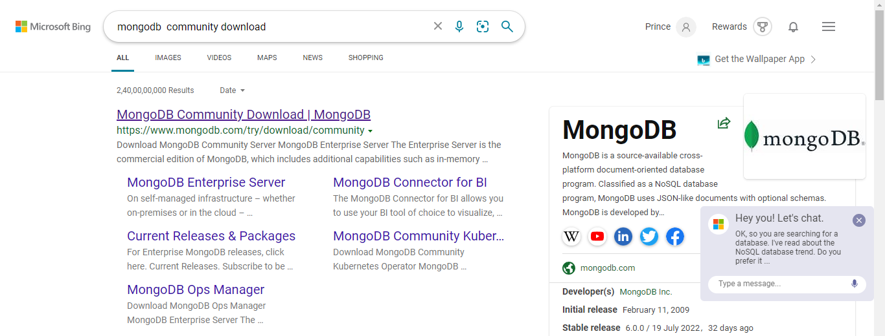
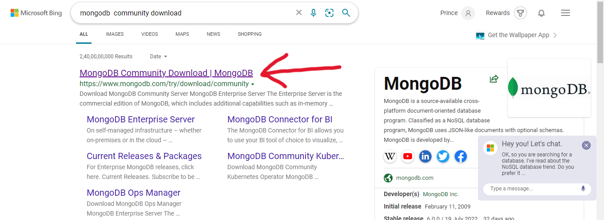
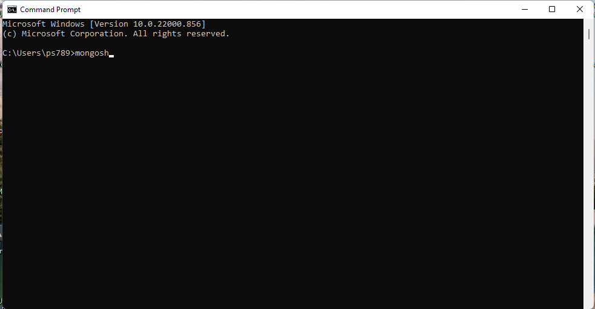

19/Sept/2022
How to Download and Install MongoDb for Windows...
(Max will take 10-15 Minutes only)
heyyy... in this article we will learn how to install and Run Mongodb on windows 2022... There is so much confusion for beginners to install and run mongodb after version 4.0
.. So, if you follow this Article
These are the Exact steps that Needs to be followed
Follow the given steps to download and Install MongoDb on your System
Now Lets Start
Step 1 : Open your browser and search mongodb community download
Step 2: Click at that Link
This Interface will open
Step 3: Click on MongoDB Community Server
Step 4: Click on Download Button
Step 5: Download a Tool MongoDB Shell
Now You will have downloaded at your Downloads Folder
Step 6: Now Double Click at your Downloaded Application and Start Installation By Clicking Given Images steps
After Installatio done
Go to the given path of your system and Check is these all files are present at there or not..
If Not ... then reinstall the application with Good Internet Connection
MongoDb Installation is done !!
Now, to work with MongoDb we need to install Mongosh also
We've Downloaded it already..so , we will simply install it now
Now extract this file at your localDisk as showing in the image >> You can write any name (preferred is Mongosh-version
)
To check MongoShell is installed or not ....
Go to the location where you've Extracted that Folder... if the files showing in the image below are there,,
Then, Installation of MongoShell is also Done!!!
After that , make folder named as data
After that , make folder named as db
inside folder data
Environment Setup
Now, Search the Edit the system Environment Variables
>> Simply Open it
On the popup window Click >> Envronment Variables
Click on path as showing Below
Click on edit
Now , Click on New
Paste Your Mongodb installation Path at the Blank field opened after clicking New.
Reminder >> this is the same path that you followed after installation of MongoDb >> Just copy it from there and paste it here.
Again, Click on New
Paste Your Mongoshell Path at the Blank field opened after clicking New.
Reminder >> this is the same path that you followed after installation of MongoShell >> Just copy it from there and paste it here.
Now just Click on OK >> OK >> OK

Now go to this path and DoubleClick on MongoD
It will open Something Like this Below....Just Let it run for 20-30 Seconds and the Minimize it
Now go to this path and DoubleClick on Mongosh
Just Hit Enter >>> It Will Open Somethig Like this
Now Dismiss it
Now, Restart Your System
After Restarting Your Windows ,, Go to cmd
Now, Type mongosh and hit Enter
That's it.. Enjoy
Thankyou for Reading this blog!!